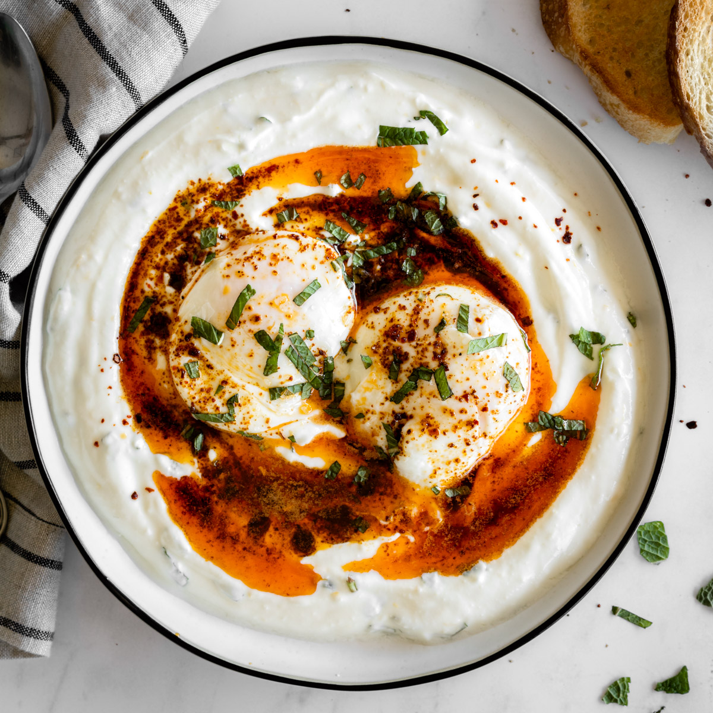

Caprese Salad

Ingridients
- 2 Large eggs
- Full phat great yogurt
- a pinch of dill
- 30g Salted butter
- Chilli flakes
- a clove of garlic
- Epic salt
Steps
- In a bowl mix yogurt with minced garlic and dill then spread the mix flat on a plate
- poach 2 eggs and lay on the yogurt spread
- for topping melt the butter and mix it with chilli flakes on low heat till slightly browned